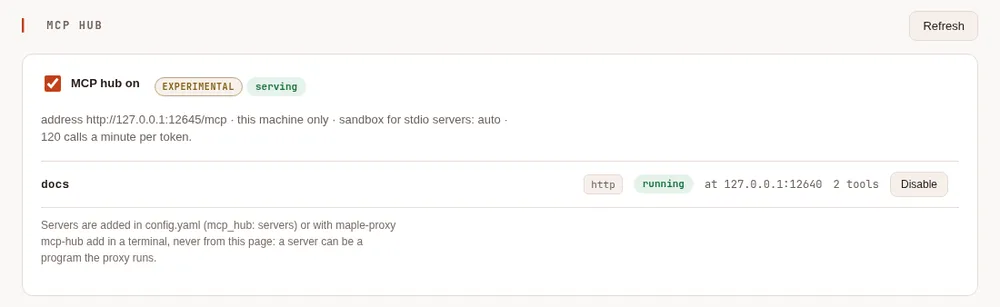
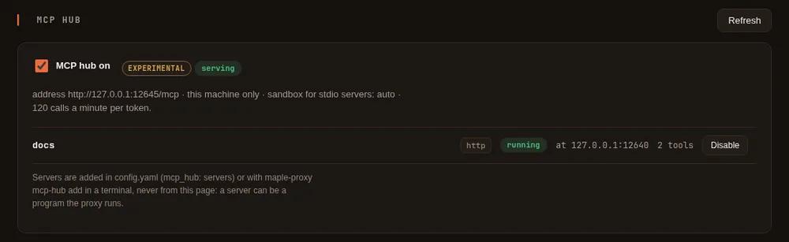

MCP hub (experimental) #
On this page
The proxy can run your MCP servers once and offer all of their tools at one address. Maple Harness, Claude Code, OpenCode and any other tool that speaks MCP then point at that address instead of each starting its own copy of every server.
It is experimental and off by default. While it is off nothing listens, nothing starts and nothing changes: the proxy and the agent work exactly as without it, and the agent's own MCP servers are unaffected.
In plain words #
- What it is. The proxy runs your MCP servers (the add-ons that give an agent extra tools) once, and every tool you use reaches them at one address.
- Why you want it. One copy of each server instead of one per tool, one place to limit what each person may call.
- The clicks. Servers are added in a terminal (
maple-proxy mcp-hub add), because a server can be a program the proxy runs. Then the setup page's MCP hub tab (from Set up more, MCP hub (experimental)) shows each server and its tools, and switches them on and off.


How it works #
- You list the servers in
config.yamlundermcp_hub.servers, in the same shape as the agent'smcp_servers: a program the proxy starts (stdio), or a server it reaches by URL (httporsse). - The proxy serves one MCP endpoint,
http://127.0.0.1:11545/mcpby default (Streamable HTTP). - Each tool is named
<server>__<tool>: agithubserver'screate_issueisgithub__create_issue. - A server can be limited to some of its tools, and each person can be limited to some of the hub's tools.
- A server that stops is started again, waiting a little longer each time; all of them stop with the proxy.
Turn it on #
Add a server from a terminal, then turn the hub on:
maple-proxy mcp-hub add files -- npx -y @modelcontextprotocol/server-filesystem /home/me/projects
maple-proxy mcp-hub add docs --url https://mcp.example.com/mcp --header "Authorization=Bearer \${secret:docs/token}"
maple-proxy mcp-hub enable
maple-proxy mcp-hub token my-laptop
maple-proxy mcp-hub statustoken prints an access token once: every tool that uses the hub sends it (see below).
or write it in config.yaml:
mcp_hub:
enabled: true
servers:
- name: files
command: npx
args: ["-y", "@modelcontextprotocol/server-filesystem", "/home/me/projects"]
- name: docs
url: https://mcp.example.com/mcp
headers:
Authorization: "Bearer ${secret:docs/token}"
tools: ["search*", "fetch"]A running proxy picks the change up within a few seconds; there is nothing to restart. The setup page's
MCP hub card shows each server, its state and its tools, and switches the hub or a server on and off. It
cannot add a server or change what one runs: that is done in config.yaml or with maple-proxy mcp-hub in a
terminal.
Point your tools at it #
Each tool sends the token from maple-proxy mcp-hub token as Authorization: Bearer <token>. Keep it in an
environment variable or your tool's secret store rather than in a file you share.
Maple Harness #
In config.yaml:
harness:
mcp_servers:
- name: hub
url: http://127.0.0.1:11545/mcp
allow_private: true
headers:
Authorization: "Bearer ${env:MAPLE_HUB_TOKEN}"The tools appear as mcp__hub__<server>__<tool> and ask for approval like any other tool. To allow one without
asking, name it in a rule, for example - {decision: allow, pattern: mcp__hub__files__read_file}.
Maple Harness sends the token to the hub's address on this machine only after the hub proves, on that connection, that it is your own (the same check as for your proxy; see Connect the harness to a proxy). While the hub is off, a program that takes its port gets nothing. Other tools, such as Claude Code, do not make this check.
Claude Code #
claude mcp add --transport http maple-hub http://127.0.0.1:11545/mcp --header "Authorization: Bearer $MAPLE_HUB_TOKEN"or in .mcp.json:
{
"mcpServers": {
"maple-hub": {
"type": "http",
"url": "http://127.0.0.1:11545/mcp",
"headers": { "Authorization": "Bearer ${MAPLE_HUB_TOKEN}" }
}
}
}OpenCode #
In opencode.json:
{
"$schema": "https://opencode.ai/config.json",
"mcp": {
"maple-hub": {
"type": "remote",
"url": "http://127.0.0.1:11545/mcp",
"headers": { "Authorization": "Bearer {env:MAPLE_HUB_TOKEN}" },
"enabled": true
}
}
}Settings #
| Key | Default | What it does |
|---|---|---|
mcp_ | off | Turns the hub on |
mcp_hub.listen | 127.0.0.1:11545 | Where the endpoint is served (path /mcp) |
mcp_ | off | Lets tools on this machine use the hub without a token. Anything that runs on this machine, a sandboxed command included, could then call every tool |
mcp_ | none | The servers: name, then command, args and env for a program, or url, type (http or sse), headers, allow_private and allow_insecure for a server reached by URL, as for the agent's mcp_servers |
mcp_ | every tool | Only these tools of the server, by its own names; * matches any run of characters |
mcp_ | off | Keeps the server configured but not started |
mcp_ | auto | How a program the hub starts is contained: auto, strict or off, as for the agent's sandbox |
mcp_ | off | In the container image only: starts stdio servers without a sandbox. Off, a stdio server there is refused (the image has no sandbox); see Running it in a container |
mcp_ | 120 | Tool calls a minute per token (per caller on this machine without one) |
mcp_hub.people | none | Per-person lists of the hub's tools each person may see and call |
mcp_, mcp_ | none | A certificate for serving off this machine |
mcp_ | off | Serves off this machine over plain HTTP; tokens then cross the network unencrypted |
Server names are letters, digits and dashes. env and headers values may be ${secret:name} or ${env:NAME}
references, looked up when the server starts, so the keys are never written in the file.
Who may use which tools #
With people set up, each access token belongs to a person, and mcp_hub.people says which of the hub's
tools each person may see and call:
mcp_hub:
people:
alice: ["files__*", "docs__*"]
bob: ["docs__search"]
local: ["*"]local is whoever calls from this machine without a token (only with loopback_without_token), unattributed a token tied to no person, and * anyone
not listed. With no people lists, everyone may use every tool the hub offers. Once there is a list, someone with
no entry (and no * entry) gets none. A person only sees the tools they may call.
Security #
- This machine only, by default, and a token on every request. The token has the
mcp-hubscope, which no other scope includes, so a token made for the model surfaces or for remote control cannot reach the hub. Make one withmaple-proxy mcp-hub token <label>in a terminal (it is shown once) and revoke it on the setup page. Requests from web pages in a browser are refused. - Off this machine it also needs a certificate (or
insecure_http), and the proxy will not serve the hub there until anmcp-hubtoken exists. - A program the hub starts runs on your machine. It is contained like the agent's commands when this machine has
a sandbox (
mcp_hub.sandbox: auto): it cannot read your SSH keys or Maple's own settings, and works in a folder of its own. Add only servers you trust; a tool that runs commands runs them for whoever may call it. In the container image, which has no sandbox, the hub does not start such a program at all (see Running it in a container). - Servers are added only by you, at a terminal or in
config.yaml. The setup page cannot add one or change its command, and adding a program, a server with a${secret:}header orallow_private, or turning the hub on from the command line needs a terminal. - Every tool call is recorded in the events log as an
mcp.callevent: the server, the tool, the person, how long it took and how it ended. Never its arguments or its result. - Tool descriptions are passed on as the server wrote them, as text, so a client sees what the server says about itself. Treat a server's descriptions as you would its code.
Reaching cloud metadata or link-local services #
A server reached by URL is never connected to a link-local address (169.254.0.0/16, fe80::/10) or a cloud
provider's metadata address (such as 169.254.169.254, fd00:ec2::254, fd20:ce::254 or 100.100.100.200),
whatever name points there, and also when it is written in one of the standard IPv6 forms that carry an IPv4
address: 64:ff9b::a9fe:a9fe, which some networks translate to 169.254.169.254, is refused the same way. The address
checked is the one actually connected to, so a name that starts pointing somewhere else later is caught too.
allow_private does not change this. The same rule holds for the agent's own mcp_servers.
Why. On a cloud machine or a Kubernetes node, the metadata address hands the machine's credentials to whatever asks. A server address that ends up there, by a typo, a changed DNS record or someone else's edit, would let an MCP connection read them.
When you need it. A few real services live at these addresses: the container credentials endpoint on Amazon ECS
(169.254.170.2), say, or a server you run on a link-local interface. For those, list the exact addresses in the
environment variable MAPLE_MCP_ALLOW_ADDRESSES, separated by commas, each with a port if you like:
MAPLE_MCP_ALLOW_ADDRESSES=169.254.170.2:80,[fe80::1%eth0]:8080 maple-proxy serve- Exact addresses only. Names, ranges (
169.254.0.0/16,a-b), wildcards (*) and0.0.0.0are refused, as is an address that is neither link-local nor metadata (a server on a private network needsallow_privateinstead). A bad value stops the proxy, or the agent, from starting, with a message naming the entry. - With a port, only that port. An IPv6 link-local address needs its interface (
%eth0) to be reached, and is listed with it; no other address takes one. - It lifts that refusal and nothing else. An address that is also in a private range, such as AWS's
fd00:ec2::254or Alibaba's100.100.100.200, still needsallow_private: trueon the server. - MCP connections only: the hub's servers and the agent's
mcp_servers. Alert webhooks keep their own rules. - Only from the environment.
config.yaml, a project's settings and the setup page cannot set it, so someone who can only change settings cannot open these addresses. - Visible. The proxy logs a warning with the addresses when it starts; the setup page's MCP hub card,
maple-proxy mcp-hub statusandmaple-harness doctorshow them (read-only); the first connection by each server to each allowed address is written to the audit log.
The risk. Whatever answers at an allowed address can be reached by every server whose name resolves there, and for a metadata address that can mean your cloud credentials. Allow as few addresses as you can, with a port, and only for servers you trust. On Kubernetes, see the Kubernetes page.
Running it as a service of its own #
maple-proxy mcp-hub serve runs the hub alone. Run one copy (the servers it starts are not shared between
copies). To put it behind a reverse proxy or a load balancer, forward /mcp with the Authorization header, give
the hub a listen address the forwarder can reach (with tls_cert and tls_key, or insecure_http on a private
network), and add the name clients use to server.allowed_hosts.
In a container, the hub reads its tokens from its own mounted secret, access.mcp_hub_tokens (one label=token per
line), and gives them the mcp-hub scope only. Taking a line out of the secret revokes that token within a minute,
without a restart. The Kubernetes page has the sample.
Behind a load balancer that adds X-Forwarded-For, list it in server.trusted_proxies, so one client's wrong
tokens do not refuse every client (see Load balancing).
Running it in a container #
The container image has no sandbox (one would need user namespaces, which containers rarely get), so there the hub
starts a stdio server only if a working sandbox is available, and otherwise refuses it with a message in its log and
in maple-proxy mcp-hub status. The status shows the sandbox as container-strict.
Run each MCP server as a container of its own that serves MCP over HTTP, and add it by URL:
mcp_hub:
servers:
- name: example
type: http
url: http://127.0.0.1:8000/mcp # a sidecar in the hub's pod
allow_private: trueThe Kubernetes page has a sidecar sample and the choice between a sidecar and a
Deployment of its own. mcp_hub.allow_uncontained_stdio: true starts stdio servers in the container anyway, with no
containment: the program can read everything the hub's container can, its mounted secret included, and reach the
network. Turn it on only for programs you would trust with that secret.
Limits #
- Experimental: names and settings may still change before it is final.
- Tools only: a server's resources and prompts are not offered through the hub.
- A server's tool list is read when it starts; a server that changes its tools later is seen after it restarts.
- A call through the hub stops after 5 minutes.
- An older proxy ignores
mcp_hub: after going back to one, the hub and its limits no longer apply.
Commands #
| Command | What it does |
|---|---|
maple-proxy | What the running hub is doing: its address, each server's state and tools. --json |
maple-proxy | Run only the hub, without the model surfaces or the setup page, from the same config.yaml and tokens: for running it as a service of its own |
maple-proxy | The configured servers |
maple-proxy | Add a program (needs a terminal). --env KEY=VALUE, --tools a,b |
maple-proxy | Add a server reached by URL. --type sse, --header KEY=VALUE, --tools, --allow-private, --allow-insecure |
maple-proxy | Remove a server (a program needs a terminal) |
maple-proxy, disable | Turn the hub on (needs a terminal) or off; with a NAME, one server |
maple-proxy | Make an access token with the mcp-hub scope (needs a terminal) |